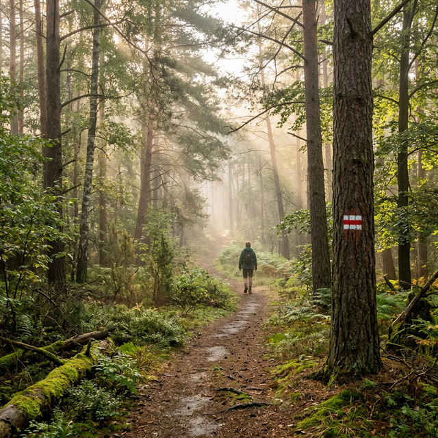
Czerwony ŚredniSzlak Kaszubski
Jeden z najdłuższych i najpiękniejszych szlaków pieszych w północnej Polsce. Przemierza Pojezierze Kaszubskie przez Lasy Mirachowskie, Jeziora Raduńskie i okolice Kościerzyny.
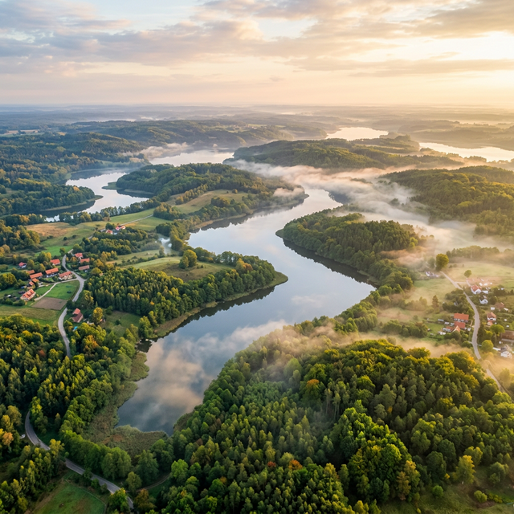
Malownicze krajobrazy, krystaliczne jeziora i bogata kultura północnej Polski czekają na Ciebie.
Kaszuby oferują niepowtarzalne doświadczenia dla każdego podróżnika – od aktywnych turystów po miłośników historii i kultury.
Ponad 1000 krystalicznych jezior polodowcowych tworzy niepowtarzający się krajobraz "Kaszubskiego Morza".
Setki kilometrów znakowanych tras przez lasy, wzgórza i nad brzegami jezior dla każdego poziomu.
Skanseny, zamki, muzea i kamienne kręgi – historia Kaszub jest równie fascynująca, co jej przyroda.
Kaszuby to jedno z najlepszych miejsc w Polsce do turystyki rowerowej – trasy dla każdego.
Wybierz szlak dopasowany do swojego poziomu i odkryj niezapomniane widoki Kaszub.

Czerwony ŚredniJeden z najdłuższych i najpiękniejszych szlaków pieszych w północnej Polsce. Przemierza Pojezierze Kaszubskie przez Lasy Mirachowskie, Jeziora Raduńskie i okolice Kościerzyny.
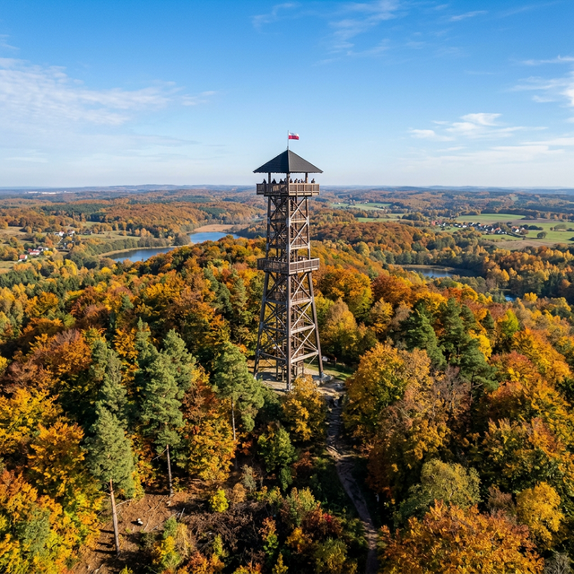
Czarny TrudnyOd Sopotu przez Wieżycę (329 m n.p.m. – najwyższy punkt Niżu Środkowoeuropejskiego) przez Gołubie i Bącką Hutę do Sierakowic. Panoramiczne widoki na całe Kaszuby.
Malowniczy szlak z Trójmiasta do Kartuz wzdłuż rzeki Raduni. Idealna trasa weekendowa łącząca aglomerację miejską z sercem Kaszub.
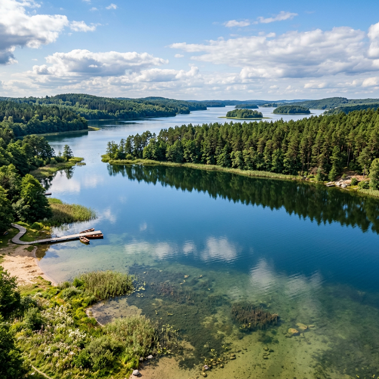
Zielony ŁatwyIdealny dla miłośników jezior i dzikiej przyrody. Biegnie wzdłuż Jeziora Raduńskiego Dolnego (737 ha) i Górnego (392 ha), tworząc tzw. "Kółko Raduńskie".
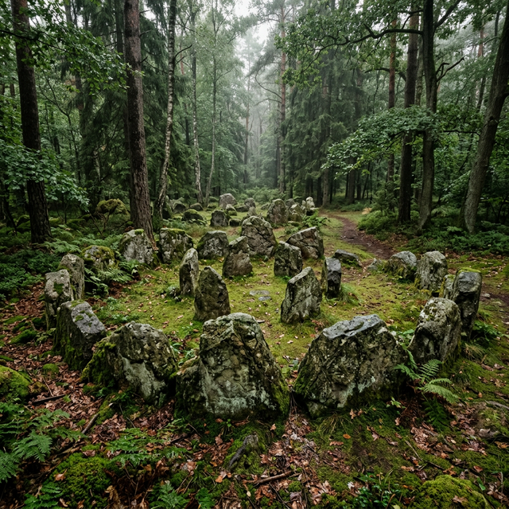
Żółty ŁatwyNiezwykły szlak prowadzący do tajemniczych kamiennych kręgów w Węsiorach i Odrach – cmentarzysk Gotów i Gepidów z I–III w. n.e., uznawanych przez niektórych za miejsca mocy.
Pętla przez Wdzydzki Park Krajobrazowy wokół największego kaszubskiego jeziora – Wdzydzé (1417 ha). Obejmuje jeziora Jelenie, Radolne i Gołuń.
Spektakularny szlak rowerowy wzdłuż brzegu Zatoki Puckiej. Prowadzi z Gdyni przez Swarzewo, Puck, Władysławowo, Chałupy, Kuźnicę, Jastarnię, Juratę aż do Helu.
System czterech szlaków rowerowych w Borach Tucholskich, odpowiedni dla rodzin z dziećmi. Trasy zachwycają widokami i pełne są dzikiej zwierzyny.
Rowerowa pętla wokół kompleksu Jezior Wdzydzkich – największego akwenu Kaszub. Widoki na "Kaszubskie Morze" z różnych perspektyw.
Rowerowa trasa przez Wdzydze Tucholskie, Cisewie, Bąk, Karsin, Wiele i Przytarnię. Pokazuje geologię polodowcowego krajobrazu Kaszub.
Historyczny szlak prowadzący między Będominem (miejscem urodzenia twórcy polskiego hymnu) a Sikorzynem. Łączy piękno przyrody z historią narodową.
Trasa wzdłuż Zatoki Gdańskiej i w okolicach Kaszubskiego Parku Krajobrazowego. Wydzielone ścieżki rowerowe, minimalne przewyższenia, idealna dla dzieci.
Kaszuby są domem dla ponad 1000 jezior polodowcowych. Oto największe i najpiękniejsze z nich.
„Kaszubskie Morze"
Największe jezioro Kaszub i Pojezierza Kaszubskiego, o charakterystycznym kształcie krzyża złożonego z pięciu połączonych akwenów. Na jeziorze znajdują się naturalne wyspy, w tym Ostrów Wielki – jedna z największych wysp jeziornych w Polsce.
Położone w północnej części Kaszub, uważane za jedno z najczystszych jezior w regionie. Doskonałe warunki do żeglarstwa i sportów wodnych.
Leży w malowniczych Borach Tucholskich. Popularny ośrodek żeglarski z dobrą infrastrukturą turystyczną. Połączone z Jeziorem Karsińskim.
Część słynnego "Kółka Raduńskiego" – systemu połączonych jezior z Jeziorem Raduńskim Górnym (392 ha). Jeden z najpiękniejszych rejonów do żeglarstwa.
Sąsiaduje z Jeziorem Charzykowskim i połączone jest z nim cieśniną. Doskonałe miejsca do kąpieli i wędkarstwa.
Malownicze jezioro w Kaszubskim Parku Krajobrazowym niedaleko Kartuz. Jedno z punktów widokowych i odpoczynku na Szlaku Kaszubskim.
Uważane za jedno z najczystszych jezior w całej Polsce. Wyróżnia się wyjątkową czystością wody i malowniczym otoczeniem lasów.
Największe polskie jezioro przybrzeżne, trzecie co do wielkości w Polsce. Leży na terenie Słowińskiego Parku Narodowego, słynącego z ruchomych wydm.
Wyjątkowo czyste jezioro morenowe przy wsi Wiele w WPK. Przezroczystość wody do 50 m – raj dla nurków.
Od najstarszego skansenu w Polsce po tajemnicze kamienne kręgi – Kaszuby skrywają wiele skarbów.
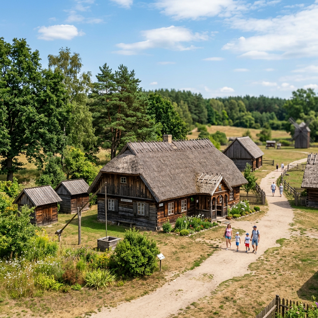
🏛️ SkansenNajstarszy skansen w Polsce (założony 1906 r.). Prezentuje ponad 50 obiektów architektury ludowej Kaszub i Kociewia z XVII–XIX wieku. Obowiązkowy punkt dla miłośników historii.
Tajemnicze cmentarzysko Gotów i Gepidów z I–III w. n.e. Kilkanaście kamiennych kręgów i kurhanów ukrytych w lesie. Uznawane przez niektórych za miejsca mocy – kaszubskie Stonehenge.
Najwyższy punkt Niżu Środkowoeuropejskiego (329 m n.p.m.). Drewniana wieża widokowa im. Jana Pawła II oferuje panoramę na całe Kaszuby i – w pogodne dni – widok na Zatokę Gdańską.
Dawny kompleks Kartuzów z XIV wieku. Kościół wyróżnia się unikalnym dachem w kształcie wieka trumny – symbolem zakonnej medytacji nad przemijaniem. Wpisany do rejestru zabytków.
Miejsce urodzenia Józefa Wybickiego, autora słów "Mazurka Dąbrowskiego". Muzeum prezentuje historię polskiego hymnu oraz życie wybitnego Kaszuba i patrioty.
Dawna twierdza krzyżacka z XIV wieku, jedna z niewielu dobrze zachowanych w Polsce. Mieści dziś muzeum regionalne. Całoroczna atrakcja turystyczna z ekspozycją historyczną.
Atrakcja z "Domem do Góry Nogami", "Domem Sybiraka" oraz Najdłuższą Deską Świata (36,83 m). Skansen ludowy z unikalnymi eksponatami z historii regionalnej i Syberii.
Jeden z najpiękniejszych parków w Polsce. Słynący z ruchomych wydm (Czołpińskiej i Łąckiej), dzikich plaż, jezior Łebsko i Gardno. Wpisany na listę Rezerwatów Biosfery UNESCO.
"Kaszubska Jerozolima" – XVII-wieczny kompleks 26 kaplic i kościołów rozsianych po lasach i wzgórzach. Ważne miejsce pielgrzymek i spacerów. Wpisany na Pomnik Historii.
Jeden z największych kompleksów leśnych Kaszub z kilkoma rezerwatami przyrody: "Szczelina Lechicka" i "Lubygość". Idealne miejsce do pieszych wędrówek i obserwacji przyrody.
Jedno z niewielu w Polsce muzeów poświęconych historii akordeonu – instrumentu silnie związanego z kaszubską kulturą muzyczną. Unikalna ekspozycja instrumentów z całego świata.
Obszar chroniony obejmujący kompleks Jezior Wdzydzkich (Wdzydze, Jelenie, Radolne, Gołuń). Piesze szlaki, ścieżki edukacyjne, kajaki i obserwacja przyrody.
Kaszuby to nie tylko wspaniałe krajobrazy, ale i bogata kultura kulinarna. Spróbuj tradycyjnej czerniny, pierogów kaszubskich, świeżych ryb i dań z gęsiny w starannie wyselekcjonowanych lokalach.
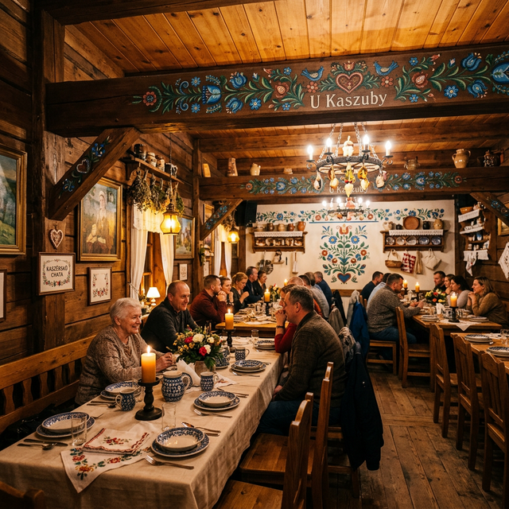
Miszewko (pow. kartuski)
Restauracja regionalna o bogatym kaszubskim wystroju. Słynie z dużych porcji i autentycznych smaków. W menu m.in. zupa brukwiowa, pikantne żołądki gęsie oraz domowa czernina. W weekendy często gra tu lokalna kapela.
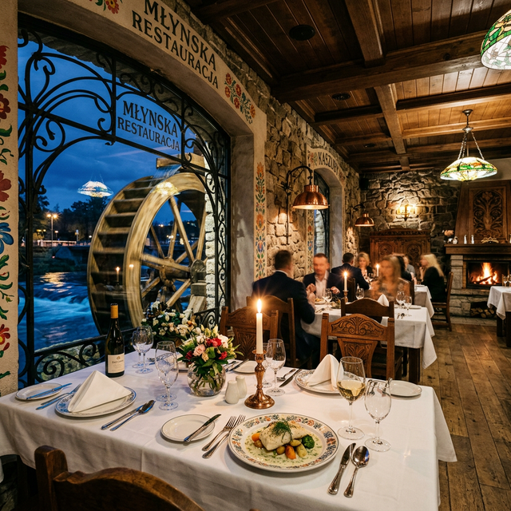
Celbowo k. Pucka
Jedno z najbardziej cenionych miejsc na mapie kulinarnej Nordy. Oferuje eleganckie wnętrze bogate w lokalne detale (jak stare koła młyńskie) i świetne regionalne jedzenie, zwłaszcza świeże ryby z Bałtyku w wyśmienitych odsłonach.
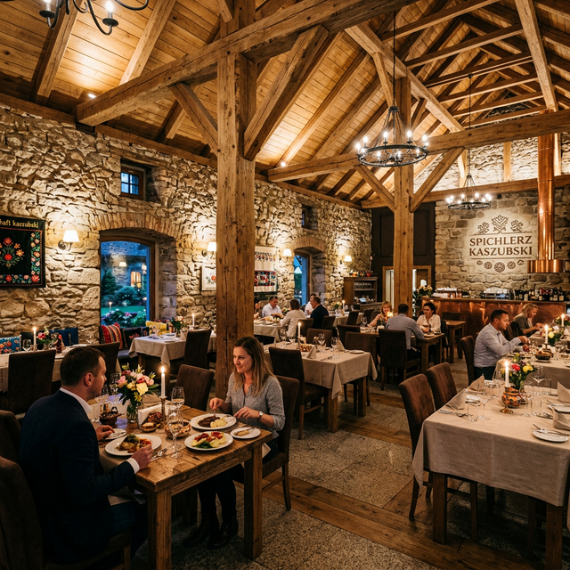
Przodkowo
Mieszcząca się w starannie odrestaurowanym spichlerzu, zachwyca swojskością i elegancją. Zgodnie z nazwą, króluje tu gęsina pod różnymi postaciami – od tradycyjnie pieczonej po wykwintne przystawki.
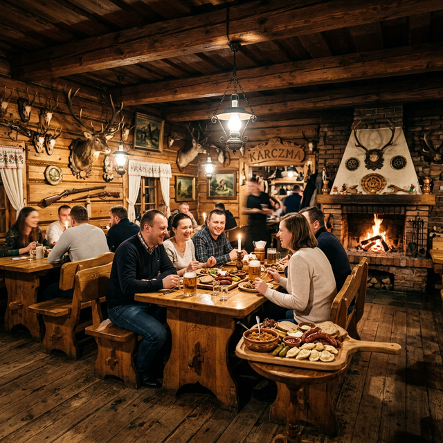
Steżyca
Rustykalna, przytulna tawerna w drewnianej chacie pełna myśliwskich trofeów i ciepła z kominka. Słynie z dań z dziczyzny, obfitych desek mięs i swobodnej, żeglarskiej atmosfery w sercu "Kółka Raduńskiego".
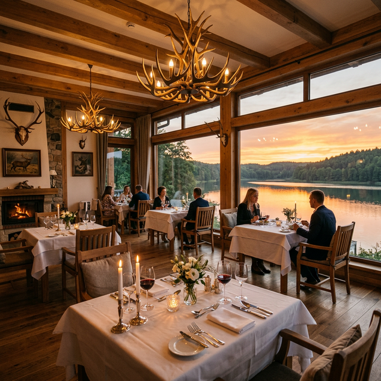
Sulęczyno
Zlokalizowana w ekskluzywnym dworku nad brzegiem Jeziora Węgorzyno. Serwuje kuchnię polską i kaszubską w wydaniu "fine dining". Panoramiczne widoki na jezioro podczas posiłku gwarantowane.
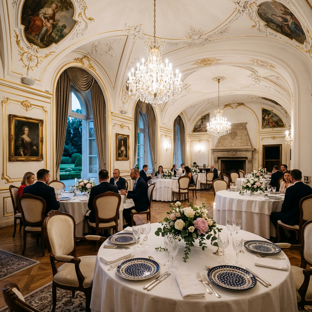
Łebunia
Elegancka kuchnia dworska w odrestaurowanym pałacu. Imponujące sklepienia, sztukaterie i kryształowe żyrandole. Doskonałe miejsce na specjalne okazje, czerpiące zarówno z kuchni morskiej jak i pałacowej tradycji myśliwskiej.
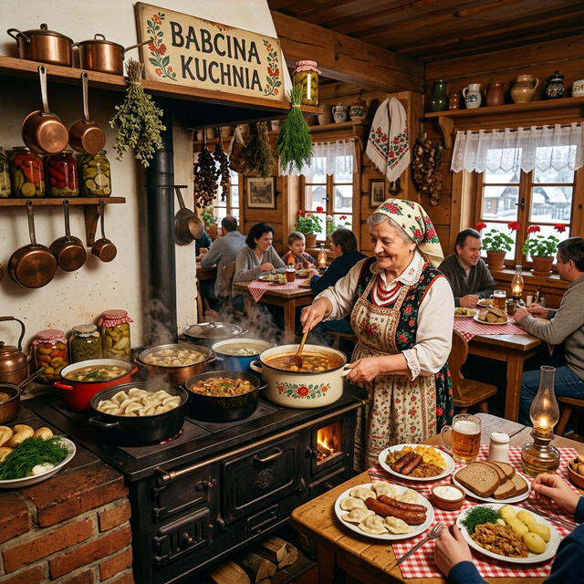
Grzybowski Młyn (k. Kościerzyny)
Dawny młyn wodny zamieniony w pensjonat. Klimat jak "u babci", domowe przetwory z grzybów z pobliskich borów, ręcznie lepione pierogi, zapach tradycyjnego drewna. Autentyczny kulinarny skarb Borów Tucholskich.
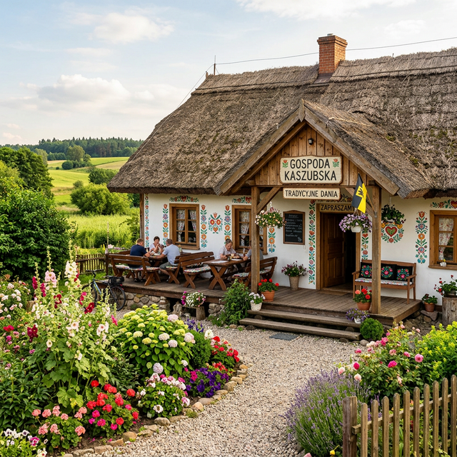
Ostrzyce
Bielone ściany, kwieciste wzory i strzecha – ta gospoda wygląda jak żywy skansen. Idealne miejsce po spacerze Szwajcarią Kaszubską. Oferują wyśmienite ruchanki z fjutem i lokalne sery z gospodarstw ekologicznych.
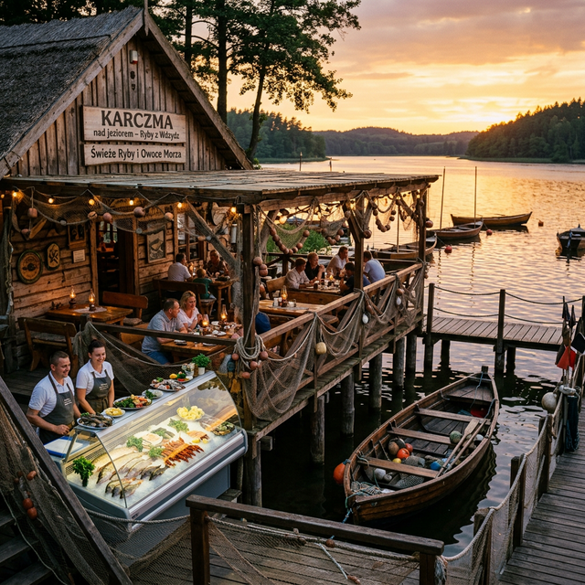
Wdzydze Kiszewskie
Klasyczna, bezpretensjonalna smażalnia i wędzarnia na wodzie. Siedząc na drewnianym pomoście tuż przy przystani żeglarskiej, zjesz tu najświeższą sielawę, sandacza i pstrąga z pieca prosto od lokalnych rybaków.
Planuj swoją przygodę z interaktywną mapą najważniejszych atrakcji regionu.